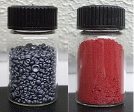

Selenium
|  | |||||||||||||||||||||||||||||||||||||||||||||||||||||||||||||||||||||||||||||||||||||||||||||||||||||||||||||||||||||||||||||||||||||||||||||||||||||||||||||||||||||||||||||||||||||||||||||||||||||||||||||||||||||||||||||||||||||
| General properties | |||||||||||||||||||||||||||||||||||||||||||||||||||||||||||||||||||||||||||||||||||||||||||||||||||||||||||||||||||||||||||||||||||||||||||||||||||||||||||||||||||||||||||||||||||||||||||||||||||||||||||||||||||||||||||||||||||||
|---|---|---|---|---|---|---|---|---|---|---|---|---|---|---|---|---|---|---|---|---|---|---|---|---|---|---|---|---|---|---|---|---|---|---|---|---|---|---|---|---|---|---|---|---|---|---|---|---|---|---|---|---|---|---|---|---|---|---|---|---|---|---|---|---|---|---|---|---|---|---|---|---|---|---|---|---|---|---|---|---|---|---|---|---|---|---|---|---|---|---|---|---|---|---|---|---|---|---|---|---|---|---|---|---|---|---|---|---|---|---|---|---|---|---|---|---|---|---|---|---|---|---|---|---|---|---|---|---|---|---|---|---|---|---|---|---|---|---|---|---|---|---|---|---|---|---|---|---|---|---|---|---|---|---|---|---|---|---|---|---|---|---|---|---|---|---|---|---|---|---|---|---|---|---|---|---|---|---|---|---|---|---|---|---|---|---|---|---|---|---|---|---|---|---|---|---|---|---|---|---|---|---|---|---|---|---|---|---|---|---|---|---|---|---|---|---|---|---|---|---|---|---|---|---|---|---|---|---|---|
| Name, symbol | selenium, Se | ||||||||||||||||||||||||||||||||||||||||||||||||||||||||||||||||||||||||||||||||||||||||||||||||||||||||||||||||||||||||||||||||||||||||||||||||||||||||||||||||||||||||||||||||||||||||||||||||||||||||||||||||||||||||||||||||||||
| Pronunciation | /sɨˈliːniəm/ si-LEE-nee-əm |
||||||||||||||||||||||||||||||||||||||||||||||||||||||||||||||||||||||||||||||||||||||||||||||||||||||||||||||||||||||||||||||||||||||||||||||||||||||||||||||||||||||||||||||||||||||||||||||||||||||||||||||||||||||||||||||||||||
| Appearance | black and red allotropes | ||||||||||||||||||||||||||||||||||||||||||||||||||||||||||||||||||||||||||||||||||||||||||||||||||||||||||||||||||||||||||||||||||||||||||||||||||||||||||||||||||||||||||||||||||||||||||||||||||||||||||||||||||||||||||||||||||||
| Selenium in the periodic table | |||||||||||||||||||||||||||||||||||||||||||||||||||||||||||||||||||||||||||||||||||||||||||||||||||||||||||||||||||||||||||||||||||||||||||||||||||||||||||||||||||||||||||||||||||||||||||||||||||||||||||||||||||||||||||||||||||||
|
|||||||||||||||||||||||||||||||||||||||||||||||||||||||||||||||||||||||||||||||||||||||||||||||||||||||||||||||||||||||||||||||||||||||||||||||||||||||||||||||||||||||||||||||||||||||||||||||||||||||||||||||||||||||||||||||||||||
| Atomic number | 34 | ||||||||||||||||||||||||||||||||||||||||||||||||||||||||||||||||||||||||||||||||||||||||||||||||||||||||||||||||||||||||||||||||||||||||||||||||||||||||||||||||||||||||||||||||||||||||||||||||||||||||||||||||||||||||||||||||||||
| Standard atomic weight (±) | 78.971(8)[1] | ||||||||||||||||||||||||||||||||||||||||||||||||||||||||||||||||||||||||||||||||||||||||||||||||||||||||||||||||||||||||||||||||||||||||||||||||||||||||||||||||||||||||||||||||||||||||||||||||||||||||||||||||||||||||||||||||||||
| Element category | polyatomic nonmetal, sometimes considered a metalloid | ||||||||||||||||||||||||||||||||||||||||||||||||||||||||||||||||||||||||||||||||||||||||||||||||||||||||||||||||||||||||||||||||||||||||||||||||||||||||||||||||||||||||||||||||||||||||||||||||||||||||||||||||||||||||||||||||||||
| Group, block | group 16 (chalcogens), p-block | ||||||||||||||||||||||||||||||||||||||||||||||||||||||||||||||||||||||||||||||||||||||||||||||||||||||||||||||||||||||||||||||||||||||||||||||||||||||||||||||||||||||||||||||||||||||||||||||||||||||||||||||||||||||||||||||||||||
| Period | period 4 | ||||||||||||||||||||||||||||||||||||||||||||||||||||||||||||||||||||||||||||||||||||||||||||||||||||||||||||||||||||||||||||||||||||||||||||||||||||||||||||||||||||||||||||||||||||||||||||||||||||||||||||||||||||||||||||||||||||
| Electron configuration | [Ar] 3d10 4s2 4p4 | ||||||||||||||||||||||||||||||||||||||||||||||||||||||||||||||||||||||||||||||||||||||||||||||||||||||||||||||||||||||||||||||||||||||||||||||||||||||||||||||||||||||||||||||||||||||||||||||||||||||||||||||||||||||||||||||||||||
| per shell | 2, 8, 18, 6 | ||||||||||||||||||||||||||||||||||||||||||||||||||||||||||||||||||||||||||||||||||||||||||||||||||||||||||||||||||||||||||||||||||||||||||||||||||||||||||||||||||||||||||||||||||||||||||||||||||||||||||||||||||||||||||||||||||||
| Physical properties | |||||||||||||||||||||||||||||||||||||||||||||||||||||||||||||||||||||||||||||||||||||||||||||||||||||||||||||||||||||||||||||||||||||||||||||||||||||||||||||||||||||||||||||||||||||||||||||||||||||||||||||||||||||||||||||||||||||
| Phase | solid | ||||||||||||||||||||||||||||||||||||||||||||||||||||||||||||||||||||||||||||||||||||||||||||||||||||||||||||||||||||||||||||||||||||||||||||||||||||||||||||||||||||||||||||||||||||||||||||||||||||||||||||||||||||||||||||||||||||
| Melting point | 494 K (221 °C, 430 °F) | ||||||||||||||||||||||||||||||||||||||||||||||||||||||||||||||||||||||||||||||||||||||||||||||||||||||||||||||||||||||||||||||||||||||||||||||||||||||||||||||||||||||||||||||||||||||||||||||||||||||||||||||||||||||||||||||||||||
| Boiling point | 958 K (685 °C, 1265 °F) | ||||||||||||||||||||||||||||||||||||||||||||||||||||||||||||||||||||||||||||||||||||||||||||||||||||||||||||||||||||||||||||||||||||||||||||||||||||||||||||||||||||||||||||||||||||||||||||||||||||||||||||||||||||||||||||||||||||
| Density near r.t. | gray: 4.81 g·cm−3 alpha: 4.39 g·cm−3 vitreous: 4.28 g·cm−3 |
||||||||||||||||||||||||||||||||||||||||||||||||||||||||||||||||||||||||||||||||||||||||||||||||||||||||||||||||||||||||||||||||||||||||||||||||||||||||||||||||||||||||||||||||||||||||||||||||||||||||||||||||||||||||||||||||||||
| when liquid, at m.p. | 3.99 g·cm−3 | ||||||||||||||||||||||||||||||||||||||||||||||||||||||||||||||||||||||||||||||||||||||||||||||||||||||||||||||||||||||||||||||||||||||||||||||||||||||||||||||||||||||||||||||||||||||||||||||||||||||||||||||||||||||||||||||||||||
| Critical point | 1766 K, 27.2 MPa | ||||||||||||||||||||||||||||||||||||||||||||||||||||||||||||||||||||||||||||||||||||||||||||||||||||||||||||||||||||||||||||||||||||||||||||||||||||||||||||||||||||||||||||||||||||||||||||||||||||||||||||||||||||||||||||||||||||
| Heat of fusion | gray: 6.69 kJ·mol−1 | ||||||||||||||||||||||||||||||||||||||||||||||||||||||||||||||||||||||||||||||||||||||||||||||||||||||||||||||||||||||||||||||||||||||||||||||||||||||||||||||||||||||||||||||||||||||||||||||||||||||||||||||||||||||||||||||||||||
| Heat of vaporization | 95.48 kJ·mol−1 | ||||||||||||||||||||||||||||||||||||||||||||||||||||||||||||||||||||||||||||||||||||||||||||||||||||||||||||||||||||||||||||||||||||||||||||||||||||||||||||||||||||||||||||||||||||||||||||||||||||||||||||||||||||||||||||||||||||
| Molar heat capacity | 25.363 J·mol−1·K−1 | ||||||||||||||||||||||||||||||||||||||||||||||||||||||||||||||||||||||||||||||||||||||||||||||||||||||||||||||||||||||||||||||||||||||||||||||||||||||||||||||||||||||||||||||||||||||||||||||||||||||||||||||||||||||||||||||||||||
vapor pressure
|
|||||||||||||||||||||||||||||||||||||||||||||||||||||||||||||||||||||||||||||||||||||||||||||||||||||||||||||||||||||||||||||||||||||||||||||||||||||||||||||||||||||||||||||||||||||||||||||||||||||||||||||||||||||||||||||||||||||
| Atomic properties | |||||||||||||||||||||||||||||||||||||||||||||||||||||||||||||||||||||||||||||||||||||||||||||||||||||||||||||||||||||||||||||||||||||||||||||||||||||||||||||||||||||||||||||||||||||||||||||||||||||||||||||||||||||||||||||||||||||
| Oxidation states | 6, 4, 2, 1,[2] −2 (a strongly acidic oxide) | ||||||||||||||||||||||||||||||||||||||||||||||||||||||||||||||||||||||||||||||||||||||||||||||||||||||||||||||||||||||||||||||||||||||||||||||||||||||||||||||||||||||||||||||||||||||||||||||||||||||||||||||||||||||||||||||||||||
| Electronegativity | Pauling scale: 2.55 | ||||||||||||||||||||||||||||||||||||||||||||||||||||||||||||||||||||||||||||||||||||||||||||||||||||||||||||||||||||||||||||||||||||||||||||||||||||||||||||||||||||||||||||||||||||||||||||||||||||||||||||||||||||||||||||||||||||
| Ionization energies | 1st: 941.0 kJ·mol−1 2nd: 2045 kJ·mol−1 3rd: 2973.7 kJ·mol−1 |
||||||||||||||||||||||||||||||||||||||||||||||||||||||||||||||||||||||||||||||||||||||||||||||||||||||||||||||||||||||||||||||||||||||||||||||||||||||||||||||||||||||||||||||||||||||||||||||||||||||||||||||||||||||||||||||||||||
| Atomic radius | empirical: 120 pm | ||||||||||||||||||||||||||||||||||||||||||||||||||||||||||||||||||||||||||||||||||||||||||||||||||||||||||||||||||||||||||||||||||||||||||||||||||||||||||||||||||||||||||||||||||||||||||||||||||||||||||||||||||||||||||||||||||||
| Covalent radius | 120±4 pm | ||||||||||||||||||||||||||||||||||||||||||||||||||||||||||||||||||||||||||||||||||||||||||||||||||||||||||||||||||||||||||||||||||||||||||||||||||||||||||||||||||||||||||||||||||||||||||||||||||||||||||||||||||||||||||||||||||||
| Van der Waals radius | 190 pm | ||||||||||||||||||||||||||||||||||||||||||||||||||||||||||||||||||||||||||||||||||||||||||||||||||||||||||||||||||||||||||||||||||||||||||||||||||||||||||||||||||||||||||||||||||||||||||||||||||||||||||||||||||||||||||||||||||||
| Miscellanea | |||||||||||||||||||||||||||||||||||||||||||||||||||||||||||||||||||||||||||||||||||||||||||||||||||||||||||||||||||||||||||||||||||||||||||||||||||||||||||||||||||||||||||||||||||||||||||||||||||||||||||||||||||||||||||||||||||||
| Crystal structure | hexagonal | ||||||||||||||||||||||||||||||||||||||||||||||||||||||||||||||||||||||||||||||||||||||||||||||||||||||||||||||||||||||||||||||||||||||||||||||||||||||||||||||||||||||||||||||||||||||||||||||||||||||||||||||||||||||||||||||||||||
| Speed of sound thin rod | 3350 m·s−1 (at 20 °C) | ||||||||||||||||||||||||||||||||||||||||||||||||||||||||||||||||||||||||||||||||||||||||||||||||||||||||||||||||||||||||||||||||||||||||||||||||||||||||||||||||||||||||||||||||||||||||||||||||||||||||||||||||||||||||||||||||||||
| Thermal expansion | amorphous: 37 µm·m−1·K−1 (at 25 °C) | ||||||||||||||||||||||||||||||||||||||||||||||||||||||||||||||||||||||||||||||||||||||||||||||||||||||||||||||||||||||||||||||||||||||||||||||||||||||||||||||||||||||||||||||||||||||||||||||||||||||||||||||||||||||||||||||||||||
| Thermal conductivity | amorphous: 0.519 W·m−1·K−1 | ||||||||||||||||||||||||||||||||||||||||||||||||||||||||||||||||||||||||||||||||||||||||||||||||||||||||||||||||||||||||||||||||||||||||||||||||||||||||||||||||||||||||||||||||||||||||||||||||||||||||||||||||||||||||||||||||||||
| Magnetic ordering | diamagnetic[3] | ||||||||||||||||||||||||||||||||||||||||||||||||||||||||||||||||||||||||||||||||||||||||||||||||||||||||||||||||||||||||||||||||||||||||||||||||||||||||||||||||||||||||||||||||||||||||||||||||||||||||||||||||||||||||||||||||||||
| Young's modulus | 10 GPa | ||||||||||||||||||||||||||||||||||||||||||||||||||||||||||||||||||||||||||||||||||||||||||||||||||||||||||||||||||||||||||||||||||||||||||||||||||||||||||||||||||||||||||||||||||||||||||||||||||||||||||||||||||||||||||||||||||||
| Shear modulus | 3.7 GPa | ||||||||||||||||||||||||||||||||||||||||||||||||||||||||||||||||||||||||||||||||||||||||||||||||||||||||||||||||||||||||||||||||||||||||||||||||||||||||||||||||||||||||||||||||||||||||||||||||||||||||||||||||||||||||||||||||||||
| Bulk modulus | 8.3 GPa | ||||||||||||||||||||||||||||||||||||||||||||||||||||||||||||||||||||||||||||||||||||||||||||||||||||||||||||||||||||||||||||||||||||||||||||||||||||||||||||||||||||||||||||||||||||||||||||||||||||||||||||||||||||||||||||||||||||
| Poisson ratio | 0.33 | ||||||||||||||||||||||||||||||||||||||||||||||||||||||||||||||||||||||||||||||||||||||||||||||||||||||||||||||||||||||||||||||||||||||||||||||||||||||||||||||||||||||||||||||||||||||||||||||||||||||||||||||||||||||||||||||||||||
| Mohs hardness | 2.0 | ||||||||||||||||||||||||||||||||||||||||||||||||||||||||||||||||||||||||||||||||||||||||||||||||||||||||||||||||||||||||||||||||||||||||||||||||||||||||||||||||||||||||||||||||||||||||||||||||||||||||||||||||||||||||||||||||||||
| Brinell hardness | 736 MPa | ||||||||||||||||||||||||||||||||||||||||||||||||||||||||||||||||||||||||||||||||||||||||||||||||||||||||||||||||||||||||||||||||||||||||||||||||||||||||||||||||||||||||||||||||||||||||||||||||||||||||||||||||||||||||||||||||||||
| CAS Registry Number | 7782-49-2 | ||||||||||||||||||||||||||||||||||||||||||||||||||||||||||||||||||||||||||||||||||||||||||||||||||||||||||||||||||||||||||||||||||||||||||||||||||||||||||||||||||||||||||||||||||||||||||||||||||||||||||||||||||||||||||||||||||||
| History | |||||||||||||||||||||||||||||||||||||||||||||||||||||||||||||||||||||||||||||||||||||||||||||||||||||||||||||||||||||||||||||||||||||||||||||||||||||||||||||||||||||||||||||||||||||||||||||||||||||||||||||||||||||||||||||||||||||
| Naming | after Selene, Greek goddess of the moon | ||||||||||||||||||||||||||||||||||||||||||||||||||||||||||||||||||||||||||||||||||||||||||||||||||||||||||||||||||||||||||||||||||||||||||||||||||||||||||||||||||||||||||||||||||||||||||||||||||||||||||||||||||||||||||||||||||||
| Discovery and first isolation | Jöns Jakob Berzelius and Johann Gottlieb Gahn (1817) | ||||||||||||||||||||||||||||||||||||||||||||||||||||||||||||||||||||||||||||||||||||||||||||||||||||||||||||||||||||||||||||||||||||||||||||||||||||||||||||||||||||||||||||||||||||||||||||||||||||||||||||||||||||||||||||||||||||
| Most stable isotopes | |||||||||||||||||||||||||||||||||||||||||||||||||||||||||||||||||||||||||||||||||||||||||||||||||||||||||||||||||||||||||||||||||||||||||||||||||||||||||||||||||||||||||||||||||||||||||||||||||||||||||||||||||||||||||||||||||||||
|
|||||||||||||||||||||||||||||||||||||||||||||||||||||||||||||||||||||||||||||||||||||||||||||||||||||||||||||||||||||||||||||||||||||||||||||||||||||||||||||||||||||||||||||||||||||||||||||||||||||||||||||||||||||||||||||||||||||
| Decay modes in parentheses are predicted, but have not yet been observed | |||||||||||||||||||||||||||||||||||||||||||||||||||||||||||||||||||||||||||||||||||||||||||||||||||||||||||||||||||||||||||||||||||||||||||||||||||||||||||||||||||||||||||||||||||||||||||||||||||||||||||||||||||||||||||||||||||||
Selenium is a chemical element with symbol Se and atomic number 34. It is a nonmetal with properties that are intermediate between those of its periodic table column-adjacent chalcogen elements sulfur and tellurium. It rarely occurs in its elemental state in nature, or as pure ore compounds. Selenium (Greek σελήνη selene meaning "Moon") was discovered in 1817 by Jöns Jacob Berzelius, who noted the similarity of the new element to the previously known tellurium (named for the Earth).
Selenium is found impurely in metal sulfide ores, copper where it partially replaces the sulfur. Commercially, selenium is produced as a byproduct in the refining of these ores, most often during production. Minerals that are pure selenide or selenate compounds are known, but are rare. The chief commercial uses for selenium today are in glassmaking and in pigments. Selenium is a semiconductor and is used in photocells. Uses in electronics, once important, have been mostly supplanted by silicon semiconductor devices. Selenium continues to be used in a few types of DC power surge protectors and one type of fluorescent quantum dot.
Selenium salts are toxic in large amounts, but trace amounts are necessary for cellular function in many organisms, including all animals, and is an ingredient in many multi-vitamins and other dietary supplements, including infant formula. Selenium is a component of the antioxidant enzymes glutathione peroxidase and thioredoxin reductase (which indirectly reduce certain oxidized molecules in animals and some plants). It is also found in three deiodinase enzymes, which convert one thyroid hormone to another. Selenium requirements in plants differ by species, with some plants requiring relatively large amounts, and others apparently requiring none.[4]
Contents
[hide]Characteristics[edit]
Physical properties[edit]
Selenium exists in several allotropes that interconvert upon heating and cooling carried out at different temperatures and rates. As prepared in chemical reactions, selenium is usually an amorphous, brick-red powder. When rapidly melted, it forms the black, vitreous form, which is usually sold industrially as beads.[5] The structure of black selenium is irregular and complex and consists of polymeric rings with up to 1000 atoms per ring. Black Se is a brittle, lustrous solid that is slightly soluble in CS2. Upon heating, it softens at 50 °C and converts to gray selenium at 180 °C; the transformation temperature is reduced by presence of halogens and amines.[6]
The red α, β and γ forms are produced from solutions of black selenium by varying evaporation rates of the solvent (usually CS2). They all have relatively low, monoclinic crystal symmetries and contain nearly identical puckered Se8 rings arranged in different fashions, as in sulfur. The packing is most dense in the α form. In the Se8 rings, the Se-Se distance is 233.5 pm and Se-Se-Se angle is 105.7 degrees. Other selenium allotropes may contain Se6 or Se7 rings.[6]
The most stable and dense form of selenium is gray and has a hexagonal crystal lattice consisting of helical polymeric chains, where the Se-Se distance is 237.3 pm and Se-Se-Se angle is 130.1 degrees. The minimum distance between chains is 343.6 pm. Gray Se is formed by mild heating of other allotropes, by slow cooling of molten Se, or by condensing Se vapor just below the melting point. Whereas other Se forms are insulators, gray Se is a semiconductor showing appreciable photoconductivity. Unlike the other allotropes, it is insoluble in CS2.[6] It resists oxidation by air and is not attacked by non-oxidizing acids. With strong reducing agents, it forms polyselenides. Selenium does not exhibit the unusual changes in viscosity that sulfur undergoes when gradually heated.[5][7]
Isotopes[edit]
Selenium has six naturally occurring isotopes, five of which are stable: 74Se, 76Se, 77Se, 78Se, and 80Se. The last three also occur as fission products, along with 79Se, which has a half-life of 327,000 years.[8][9] The final naturally occurring isotope, 82Se, has a very long half-life (~1020 yr, decaying via double beta decay to 82Kr), which, for practical purposes, can be considered to be stable. Twenty-three other unstable isotopes have been characterized.[10]
See also Selenium-79 for more information on recent changes in the measured half-life of this long-lived fission product, important for the dose calculations performed in the frame of the geological disposal of long-lived radioactive waste.[10]
Chemical compounds[edit]
Selenium compounds commonly exist in the oxidation states −2, +2, +4, and +6.
Chalcogen compounds[edit]
Selenium forms two oxides: selenium dioxide (SeO2) and selenium trioxide (SeO3). Selenium dioxide is formed by the reaction of elemental selenium with oxygen:[5]
- Se8 + 8 O2 → 8 SeO2
It is a polymeric solid that forms monomeric SeO2 molecules in the gas phase. It dissolves in water to form selenous acid, H2SeO3. Selenous acid can also be made directly by oxidizing elemental selenium with nitric acid:[11]
- 3 Se + 4 HNO3 + H2O → 3 H2SeO3 + 4 NO
Unlike sulfur, which forms a stable trioxide, selenium trioxide is thermodynamically unstable and decomposes to the dioxide above 185 °C:[5][11]
- 2 SeO3 → 2 SeO2 + O2 (ΔH = −54 kJ/mol)
Selenium trioxide is produced in the laboratory by the reaction of anhydrous potassium selenate (K2SeO4) and sulfur trioxide (SO3).[12]
Salts of selenous acid are called selenites. These include silver selenite (Ag2SeO3) and sodium selenite (Na2SeO3).
Hydrogen sulfide reacts with aqueous selenous acid to produce selenium disulfide:
- H2SeO3 + 2 H2S → SeS2 + 3 H2O
Selenium disulfide consists of 8-membered rings of a nearly statistical distribution of sulfur and selenium atoms. It has an approximate composition of SeS2, with individual rings varying in composition, such as Se4S4 and Se2S6. Selenium disulfide has been use in shampoo as an anti-dandruff agent, an inhibitor in polymer chemistry, a glass dye, and a reducing agent in fireworks.[11]
Selenium trioxide may be synthesized by dehydrating selenic acid, H2SeO4, which is itself produced by the oxidation of selenium dioxide with hydrogen peroxide:[13]
- SeO2 + H2O2 → H2SeO4
Hot, concentrated selenic acid is capable of dissolving gold, forming gold(III) selenate.[14]
Halogen compounds[edit]
Iodides of selenium are not well known. The only stable chloride is selenium monochloride (Se2Cl2), which might be better known as selenium(I) chloride; the corresponding bromide is also known. These species are structurally analogous to the corresponding disulfur dichloride. Selenium dichloride is an important reagent in the preparation of selenium compounds (e.g. the preparation of Se7). It is prepared by treating selenium with sulfuryl chloride (SO2Cl2).[15] Selenium reacts with fluorine to form selenium hexafluoride:
- Se8 + 24 F2 → 8 SeF6
In comparison with its sulfur counterpart (sulfur hexafluoride), selenium hexafluoride (SeF6) is more reactive and is a toxic pulmonary irritant.[16] Some of the selenium oxyhalides, such as selenium oxyfluoride (SeOF2) and selenium oxychloride (SeOCl2) have been used as specialty solvents.[5]
Selenides[edit]
Analogous to the behavior of other chalcogens, selenium forms a dihydride H2Se. It is a strongly odiferous, toxic, and colorless gas. It is more acidic than H2S. In solution it ionizes to HSe−. The selenide dianion Se2− forms a variety of compounds, including the minerals from which selenium is obtained commercially. Illustrative selenides include mercury selenide (HgSe), lead selenide (PbSe), zinc selenide (ZnSe), and copper indium gallium diselenide (Cu(Ga,In)Se2). These materials are semiconductors. With highly electropositive metals, such as aluminium, these selenides are prone to hydrolysis:[5]
- Al2Se3 + 6 H2O → Al2O3 + 6 H2Se
Alkali metal selenides react with selenium to form polyselenides, Se2−
n, which exist as chains.
Other compounds[edit]
Tetraselenium tetranitride, Se4N4, is an explosive orange compound analogous to tetrasulfur tetranitride (S4N4).[5][17][18] It can be synthesized by the reaction of selenium tetrachloride (SeCl4) with [((CH
3)
3Si)
2N]
2Se.[19]
Selenium reacts with cyanides to yield selenocyanates:[5]
- 8 KCN + Se8 → 8 KSeCN
Organoselenium compounds[edit]
Selenium, especially in the II oxidation state, forms stable bonds to carbon, which are structurally analogous to the corresponding organosulfur compounds. Especially common are selenides (R2Se, analogues of thioethers), diselenides (R2Se2, analogues of disulfides), and selenols (RSeH, analogues of thiols). Representatives of selenides, diselenides, and selenols include respectively selenomethionine, diphenyldiselenide, and benzeneselenol. The sulfoxide in sulfur chemistry is represented in selenium chemistry by the selenoxides (formula RSe(O)R), which are intermediates in organic synthesis, as illustrated by the selenoxide elimination reaction. Consistent with trends indicated by the double bond rule, selenoketones, R(C=Se)R, and selenaldehydes, R(C=Se)H, are rarely observed.[20]
History[edit]
Selenium (Greek σελήνη selene meaning "Moon") was discovered in 1817 by Jöns Jakob Berzelius and Johan Gottlieb Gahn.[21] Both chemists owned a chemistry plant near Gripsholm, Sweden producing sulfuric acid by the lead chamber process. The pyrite from the Falun mine created a red precipitate in the lead chambers which was presumed to be an arsenic compound, and so the pyrite's use to make acid was discontinued. Berzelius and Gahn wanted to use the pyrite and they also observed that the red precipitate gave off a smell like horseradish when burned. This smell was not typical of arsenic, but a similar odor was known from tellurium compounds. Hence, Berzelius's first letter to Alexander Marcet stated that this was a tellurium compound. However, the lack of tellurium compounds in the Falun mine minerals eventually led Berzelius to reanalyze the red precipitate, and in 1818 he wrote a second letter to Marcet describing a newly found element similar to sulfur and tellurium. Because of its similarity to tellurium, named for the Earth, Berzelius named the new element after the Moon.[22][23]
In 1873, Willoughby Smith found that the electrical resistance of grey selenium was dependent on the ambient light. This led to its use as a cell for sensing light. The first commercial products using selenium were developed by Werner Siemens in the mid-1870s. The selenium cell was used in the photophone developed by Alexander Graham Bell in 1879. Selenium transmits an electric current proportional to the amount of light falling on its surface. This phenomenon was used in the design of light meters and similar devices. Selenium's semiconductor properties found numerous other applications in electronics.[24][25][26] The development of selenium rectifiers began during the early 1930s, and these replaced copper oxide rectifiers because of their superior efficiencies.[27][28][29] These lasted in commercial applications until the 1970s, following which they were replaced with less expensive and even more efficient silicon rectifiers.
Selenium came to medical notice later because of its toxicity to human beings working in industries. Selenium was also recognized as an important veterinary toxin, which is seen in animals that have eaten high-selenium plants. In 1954, the first hints of specific biological functions of selenium were discovered in microorganisms.[30][31] Its essentiality for mammalian life was discovered in 1957.[32][33] In the 1970s, it was shown to be present in two independent sets of enzymes. This was followed by the discovery of selenocysteine in proteins. During the 1980s, it was shown that selenocysteine is encoded by the codon UGA. The recoding mechanism was worked out first in bacteria and then in mammals (see SECIS element).[34]
Occurrence[edit]
Native (i.e., elemental) selenium is a rare mineral, which does not usually form good crystals, but, when it does, they are steep rhombohedra or tiny acicular (hair-like) crystals.[35] Isolation of selenium is often complicated by the presence of other compounds and elements.
Selenium occurs naturally in a number of inorganic forms, including selenide-, selenate-, and selenite-containing minerals, but these minerals are rare. The common mineral selenite is not a selenium mineral, and contains no selenite ion, but is rather a type of gypsum (calcium sulfate hydrate) named like selenium for the moon well before the discovery of selenium. Selenium is most commonly found quite impurely, replacing a small part of the sulfur in sulfide ores of many metals.[36][37]
In living systems, selenium is found in the amino acids selenomethionine, selenocysteine, and methylselenocysteine. In these compounds, selenium plays a role analogous to that of sulfur. Another naturally occurring organoselenium compound is dimethyl selenide.[38][38]
Certain solids are selenium-rich, and selenium can be bioconcentrated by certain plants. In soils, selenium most often occurs in soluble forms such as selenate (analogous to sulfate), which are leached into rivers very easily by runoff.[36][37] Ocean water contains significant amounts of selenium.[39][40]
Anthropogenic sources of selenium include coal burning and the mining and smelting of sulfide ores.[41]
Production[edit]
Selenium is most commonly produced from selenide in many sulfide ores, such as those of copper, nickel, or lead. Electrolytic metal refining is particularly conducive to producing selenium as a byproduct, and it is obtained from the anode mud of copper refineries. Another source was the mud from the lead chambers of sulfuric acid plants but this method to produce sulfuric acid is no longer used. These muds can be processed by a number of means to obtain selenium. However, most elemental selenium comes as a byproduct of refining copper or producing sulfuric acid.[42][43] Since the invention of solvent extraction and electrowinning (SX/EW) for the production of copper this method takes an increasing share of the world wide copper production.[44] This changes the availability of selenium because only a comparably small part of the selenium in the ore is leached together with the copper.[45]
Industrial production of selenium usually involves the extraction of selenium dioxide from residues obtained during the purification of copper. Common production from the residue then begins by oxidation with sodium carbonate to produce selenium dioxide. The selenium dioxide is then mixed with water and the solution is acidified to form selenous acid (oxidation step). Selenous acid is bubbled with sulfur dioxide (reduction step) to give elemental selenium.[46][47]
About 2,000 tonnes of selenium was produced in 2011 worldwide, mostly in Germany (650 t), Japan (630 t), Belgium (200 t) and Russia (140 t), and the total reserves were estimated at 93,000 tonnes. These data however exclude two major producers, the United States and China. The price was relatively stable during 2004–2010 at ~30 US dollars per pound (per 100-pound lot) but increased to 65 $/lb in 2011. A previous sharp increase was observed in 2004 from 4–5 to 27 $/lb. The consumption in 2010 was divided as follows: metallurgy – 30%, glass manufacturing – 30%, agriculture – 10%, chemicals and pigments – 10%, electronics – 10%. China is the dominant consumer of selenium at 1,500–2,000 tonnes/year.[48]
Applications[edit]
Manganese electrolysis[edit]
During the electro winning of manganese an addition of selenium dioxide decreases the power necessary to operate the electrolysis cells. China is the largest consumer of selenium dioxide for this purpose. For every tonne of manganese an average of 2 kg selenium oxide is used.[48][49]
Glass production[edit]
The largest commercial use of Se, accounting for about 50% of consumption, is for the production of glass. Se compounds confer a red color to glass. This color cancels out the green or yellow tints that arise from iron impurities that are typical for most glass. For this purpose various selenite and selenate salts are added. For other applications, the red color may be desirable, in which case mixtures of CdSe and CdS are added.[50]
Alloys[edit]
Selenium is used with bismuth in brasses to replace more toxic lead. The regulation of lead in drinking water applications with the Safe Drinking Water Act of 1974 made a reduction of lead in brass necessary. The new brass is marketed under the name EnviroBrass.[51] Like lead and sulfur, selenium improves the machinability of steel at concentrations of about 0.15%.[52][53] The same improvement is also observed in copper alloys and therefore selenium is also used in machinable copper alloys.[54]
Solar cells[edit]
Copper indium gallium selenide is a material used in the production of solar cells.[55]
Other uses[edit]
Small amounts of organoselenium compounds are used to modify the vulcanization catalysts used in the production of rubber.[45]
The demand for selenium by the electronics industry is declining, despite a number of continuing applications.[48] Because of its photovoltaic and photoconductive properties, selenium is used in photocopying,[56][57][58][59] photocells, light meters and solar cells. Its use as a photoconductor in plain-paper copiers once was a leading application but in the 1980s, the photoconductor application declined (although it was still a large end-use) as more and more copiers switched to the use of organic photoconductors. It was once widely used in selenium rectifiers. These uses have mostly been replaced by silicon-based devices or are in the process of being replaced. The most notable exception is in power DC surge protection, where the superior energy capabilities of selenium suppressors make them more desirable than metal oxide varistors.
Zinc selenide was the first material for blue LEDs but gallium nitride is dominating the market now.[60] Cadmium selenide has played an important part in the fabrication of quantum dots. Sheets of amorphous selenium convert x-ray images to patterns of charge in xeroradiography and in solid-state, flat-panel x-ray cameras.[61]
Selenium is a catalyst in some chemical reactions but it is not widely used because of issues with toxicity. In X-ray crystallography, incorporation of one or more selenium atoms in place of sulfur helps with Multi-wavelength anomalous dispersion and Single wavelength anomalous dispersion phasing.[62]
Selenium is used in the toning of photographic prints, and it is sold as a toner by numerous photographic manufacturers. Its use intensifies and extends the tonal range of black-and-white photographic images and improves the permanence of prints.[63][64][65]
75Se is used as a gamma source in industrial radiography.[66]
Biological role[edit]
| NFPA 704 "fire diamond" |
|---|
| Fire diamond for elemental selenium |

{kind=link}
{kind=link}
{kind=link}
{kind=link}
{kind=link}
Although it is toxic in large doses, selenium is an essential micronutrient for animals. In plants, it occurs as a bystander mineral, sometimes in toxic proportions in forage (some plants may accumulate selenium as a defense against being eaten by animals, but other plants such as locoweed require selenium, and their growth indicates the presence of selenium in soil).[4] See more on plant nutrition below.
Selenium is a component of the unusual amino acids selenocysteine and selenomethionine. In humans, selenium is a trace element nutrient that functions as cofactor for reduction of antioxidant enzymes, such as glutathione peroxidases[67] and certain forms of thioredoxin reductase found in animals and some plants (this enzyme occurs in all living organisms, but not all forms of it in plants require selenium).
The glutathione peroxidase family of enzymes (GSH-Px) catalyze certain reactions that remove reactive oxygen species such as hydrogen peroxide and organic hydroperoxides:
- 2 GSH + H2O2----GSH-Px → GSSG + 2 H2O
Selenium also plays a role in the functioning of the thyroid gland and in every cell that uses thyroid hormone, by participating as a cofactor for the three of the four known types of thyroid hormone deiodinases, which activate and then deactivate various thyroid hormones and their metabolites: the iodothyronine deiodinases are the subfamily of deiodinase enzymes that use selenium as the otherwise rare amino acid selenocysteine. (Only the deiodinase iodotyrosine deiodinase, which works on the last break-down products of thyroid hormone, does not use selenium).[68]
Selenium may inhibit Hashimoto's disease, in which the body's own thyroid cells are attacked as alien. A reduction of 21% on TPO antibodies was reported with the dietary intake of 0.2 mg of selenium.[69]
Increased dietary selenium intakes reduce the effects of mercury toxicity,[70][71][72] although this protective effect is only apparent at low to modest doses of mercury.[73] Evidence suggests that the molecular mechanisms of mercury toxicity includes the irreversible inhibition of selenoenzymes that are required to prevent and reverse oxidative damage in brain and endocrine tissues.[74][75]
Evolution in biology[edit]
From about three billion years ago, prokaryotic selenoprotein families drive the evolution of selenocysteine, an amino acid. Selenium is incorporated into several prokaryotic selenoprotein families in bacteria, archaea and eukaryotes as selenocysteine,[76] where selenoprotein peroxiredoxins protect bacterial and eukaryotic cells against oxidative damage. Selenoprotein families of GSH-Px and the deiodinases of eukaryotic cells seem to have a bacterial phylogenetic origin. The selenocysteine-containing form occurs in species as diverse as green algae, diatoms, sea urchin, fish, and chicken. Selenium enzymes are involved in utilization of the small reducing molecules glutathione and thioredoxin. One family of selenium-containing molecules (the glutathione peroxidases) destroy peroxide and repair damaged peroxidized cell membranes, using glutathione. Another selenium-containing enzyme in some plants and in animals (thioredoxin reductase) generates reduced thioredoxin, a dithiol that serves as an electron source for peroxidases and also the important reducing enzyme ribonucleotide reductase that makes DNA precursors from RNA precursors.[77]
Trace elements involved in GSH-Px and superoxide dismutase enzymes activities, i.e. selenium, vanadium, magnesium, copper, and zinc, may have been lacking in some terrestrial mineral-deficient areas.[76] Marine organisms retained and sometimes expanded their seleno-proteomes, whereas the seleno-proteomes of some terrestrial organisms were reduced or completely lost. These findings suggest that, with the exception of vertebrates, aquatic life supports selenium utilization, whereas terrestrial habitats lead to reduced use of this trace element.[78] Marine fishes and vertebrate thyroid glands have the highest concentration of selenium and iodine. From about 500 Mya, freshwater and terrestrial plants slowly optimized the production of "new" endogenous antioxidants such as ascorbic acid (Vitamin C), polyphenols (including flavonoids), tocopherols, etc. A few of these appeared more recently, in the last 50–200 million years, in fruits and flowers of angiosperm plants. In fact, the angiosperms (the dominant type of plant today) and most of their antioxidant pigments evolved during the late Jurassic period.
The deiodinase isoenzymes constitute another family of eukaryotic selenoproteins with identified enzyme function. Deiodinases are able to extract electrons from iodides, and iodides from iodothyronines. They are, thus, involved in thyroid-hormone regulation, participating in the protection of thyrocytes from damage by H2O2 produced for thyroid-hormone biosynthesis.[79] About 200 Mya, new selenoproteins were developed as mammalian GSH-Px enzymes.[80][81] [82][83]
Nutritional sources of selenium[edit]
Dietary selenium comes from nuts, cereals, meat, mushrooms, fish, and eggs. Brazil nuts are the richest ordinary dietary source (though this is soil-dependent, since the Brazil nut does not require high levels of the element for its own needs). In descending order of concentration, high levels are also found in kidney, tuna, crab, and lobster.[84][85]
Selenium as a dietary supplement is available in many forms, including multi-vitamins. In 2013 the U.S. Food and Drug Administration (FDA) proposed the requirement of minimum and maximum levels of selenium in infant formula.[86]
The human body's content of selenium is believed to be in the 13–20 milligram range.[87]
Indicator plant species[edit]
Certain species of plants are considered indicators of high selenium content of the soil, since they require high levels of selenium to thrive. The main selenium indicator plants are Astragalus species (including some locoweeds), prince's plume (Stanleya sp.), woody asters (Xylorhiza sp.), and false goldenweed (Oonopsis sp.)[88]
Medical use[edit]
The substance loosely called selenium sulfide (approximate formula SeS2) is the active ingredient in some anti-dandruff shampoos.[89] The selenium compound kills the scalp fungus Malassezia, which causes shedding of dry skin fragments. The ingredient is also used in body lotions to treat tinea versicolor due to infection by a different species of Malassezia fungus.[90]
Detection in biological fluids[edit]
Selenium may be measured in blood, plasma, serum or urine to monitor excessive environmental or occupational exposure, confirm a diagnosis of poisoning in hospitalized victims or to assist in a forensic investigation in a case of fatal overdosage. Some analytical techniques are capable of distinguishing organic from inorganic forms of the element. Both organic and inorganic forms of selenium are largely converted to monosaccharide conjugates (selenosugars) in the body prior to being eliminated in the urine. Cancer patients receiving daily oral doses of selenothionine may achieve very high plasma and urine selenium concentrations.[91]
Toxicity[edit]
Although selenium is an essential trace element, it is toxic if taken in excess. Exceeding the Tolerable Upper Intake Level of 400 micrograms per day can lead to selenosis.[92] This 400 microgram (µg) Tolerable Upper Intake Level is based primarily on a 1986 study of five Chinese patients who exhibited overt signs of selenosis and a follow up study on the same five people in 1992.[93] The 1992 study actually found the maximum safe dietary Se intake to be approximately 800 micrograms per day (15 micrograms per kilogram body weight), but suggested 400 micrograms per day to not only avoid toxicity, but also to avoid creating an imbalance of nutrients in the diet and to account for data from other countries.[94] In China, people who ingested corn grown in extremely selenium-rich stony coal (carbonaceous shale) have suffered from selenium toxicity. This coal was shown to have selenium content as high as 9.1%, the highest concentration in coal ever recorded in literature.[95]
Signs and symptoms of selenosis include a garlic odor on the breath, gastrointestinal disorders, hair loss, sloughing of nails, fatigue, irritability, and neurological damage. Extreme cases of selenosis can result in cirrhosis of the liver, pulmonary edema, and death.[96] Elemental selenium and most metallic selenides have relatively low toxicities because of their low bioavailability. By contrast, selenates and selenites are very toxic, having an oxidant mode of action similar to that of arsenic trioxide. The chronic toxic dose of selenite for humans is about 2400 to 3000 micrograms of selenium per day for a long time.[97] Hydrogen selenide is an extremely toxic, corrosive gas.[98] Selenium also occurs in organic compounds, such as dimethyl selenide, selenomethionine, selenocysteine and methylselenocysteine, all of which have high bioavailability and are toxic in large doses.
On 19 April 2009, 21 polo ponies died shortly before a match in the United States Polo Open. Three days later, a pharmacy released a statement explaining that the horses had received an incorrect dose of one of the ingredients used in a vitamin/mineral supplement compound that had been incorrectly compounded by a compounding pharmacy. Analysis of blood levels of inorganic compounds in the supplement indicated the selenium concentrations were ten to fifteen times higher than normal in the horses' blood samples, and 15 to 20 times higher than normal in their liver samples. It was later confirmed that selenium was the ingredient in question.[99]
Selenium poisoning of water systems may result whenever new agricultural runoff courses through normally dry, undeveloped lands. This process leaches natural soluble selenium compounds (such as selenates) into the water, which may then be concentrated in new "wetlands" as the water evaporates. Selenium pollution to waterways also occurs from leaching of selenium from coal flue ash, mining and metal smelting, crude oil processing and landfill.[100] The resulting high selenium levels in waterways have been found to have caused certain congenital disorders in oviparous species such as wetland birds,[101] and fish.[102] Elevated dietary methylmercury levels can enhance the negative effects of selenium toxicity in oviparous species.[103][104]

In fish and other wildlife, low levels of selenium cause deficiency while high levels cause toxicity. For example, in salmon, the optimal concentration of selenium in the fish tissue (whole body) is about 1 microgram selenium per gram of tissue (dry weight). At levels much below that concentration, young salmon die from selenium deficiency;[106] much above that level they die from toxic excess.[105]
Deficiency[edit]
Selenium deficiency is rare in healthy, well-nourished individuals. It can occur in patients with severely compromised intestinal function, those undergoing total parenteral nutrition, and[108] in those of advanced age (over 90). Also, people dependent on food grown from selenium-deficient soil are at risk. Although New Zealand has low levels of selenium in its soil, adverse health effects have not been detected.[109]
Selenium deficiency as defined by low (<60% of normal) selenoenzyme activity levels in brain and endocrine tissues occurs only when a low selenium status is linked with an additional stress, such as high exposures to mercury[110] or as a result of increased oxidant stress due to vitamin E deficiency.[111]
There are interactions between selenium and other nutrients, such as iodine and vitamin E. The effect of selenium deficiency on health remains uncertain, particularly in relation to Kashin-Beck disease.[112] Also, there are interactions between selenium and other minerals, such as zinc and copper. It seems that a high dose of Se supplements to pregnant animals might disturb the Zn:Cu ratio which, in turn, leads to Zn reduction. It can be concluded that the Zn status should be monitored when high doses of Se are supplemented to pregnant animals. Further studies need to be done with higher levels of Se supplement to confirm these interactions.[113]
In some regions (e.g. various regions within North America) where low available selenium levels in soil lead to low concentrations in dry matter of plants, Se deficiency in some animal species may occur unless dietary (or injected) selenium supplementation is done.[114] Ruminants are particularly susceptible. In general, absorption of dietary selenium is lower in ruminants than in non-ruminants, and is lower from forages than from grain.[115] Ruminants grazing certain forages, e.g. some white clover varieties containing cyanogenic glycosides, may have higher selenium requirements,[115] presumably because of cyanide from the aglycone released by glucosidase activity in the rumen[116] and inactivation of glutathione peroxidases due to absorbed cyanide's effect on the glutathione moiety.[117] Neonate ruminants at risk of WMD (white muscle disease) may be administered both selenium and vitamin E by injection; some of the WMD myopathies respond only to selenium, some only to vitamin E, and some to either.[118]
Controversial health effects[edit]
A number of correlative epidemiological studies have implicated selenium deficiency (as measured by blood levels) in a number of serious or chronic diseases, such as cancer,[119] diabetes,[119] HIV/AIDS,[120] and tuberculosis. In addition, selenium supplementation has been found to be a chemopreventive for some types of cancer in some types of rodents. However, in randomized, blinded, controlled prospective trials in humans, selenium supplementation has not succeeded in reducing the incidence of any disease, nor has a meta-analysis of such selenium supplementation studies detected a decrease in overall mortality.[121]
See also[edit]
References[edit]
- Jump up ^ Standard Atomic Weights 2013. Commission on Isotopic Abundances and Atomic Weights
- Jump up ^ Greenwood, Norman N.; Earnshaw, Alan (1997). Chemistry of the Elements (2nd ed.). Butterworth-Heinemann. ISBN 0080379419.
- Jump up ^ Magnetic susceptibility of the elements and inorganic compounds, in Lide, D. R., ed. (2005). CRC Handbook of Chemistry and Physics (86th ed.). Boca Raton (FL): CRC Press. ISBN 0-8493-0486-5.
- ^ Jump up to: a b Ruyle, George. "Poisonous Plants on Arizona Rangelands" (PDF). The University of Arizona. Retrieved 2009-01-05.
- ^ Jump up to: a b c d e f g h House, James E. (2008). Inorganic chemistry. Academic Press. p. 524. ISBN 0-12-356786-6.
- ^ Jump up to: a b c Greenwood, Norman N.; Earnshaw, Alan (1997). Chemistry of the Elements (2nd ed.). Butterworth-Heinemann. pp. 751–752. ISBN 0080379419.
- Jump up ^ Video of selenium heating on YouTube
- Jump up ^ "The half-life of 79Se". Physikalisch-Technische Bundesanstalt. 2010-09-23. Retrieved 2012-05-29.
- Jump up ^ Jörg, Gerhard; Bühnemann, Rolf; Hollas, Simon; Kivel, Niko; Kossert, Karsten; Van Winckel, Stefaan; Gostomski, Christoph Lierse v. (2010). "Preparation of radiochemically pure 79Se and highly precise determination of its half-life". Applied Radiation and Isotopes 68 (12): 2339–2351. doi:10.1016/j.apradiso.2010.05.006. PMID 20627600.
- ^ Jump up to: a b Audi, Georges; Bersillon, O.; Blachot, J.; Wapstra, A.H. (2003). "The NUBASE Evaluation of Nuclear and Decay Properties". Nuclear Physics A (Atomic Mass Data Center) 729: 3–128. Bibcode:2003NuPhA.729....3A. doi:10.1016/j.nuclphysa.2003.11.001.
- ^ Jump up to: a b c Wiberg, Egon; Wiberg, Nils & Holleman, Arnold Frederick (2001). Inorganic chemistry. San Diego: Academic Press. p. 583. ISBN 0-12-352651-5.
- Jump up ^ Greenwood, Norman N.; Earnshaw, Alan (1997). Chemistry of the Elements (2nd ed.). Butterworth-Heinemann. p. 780. ISBN 0080379419.
- Jump up ^ Seppelt, K. & Desmarteau, Darryl D. (1980). "Selenoyl difluoride". Inorganic Syntheses. Inorganic Syntheses 20: 36–38. doi:10.1002/9780470132517.ch9. ISBN 0-471-07715-1. The report describes the synthesis of selenic acid.
- Jump up ^ Lenher, V. (April 1902). "Action of selenic acid on gold". Journal of the American Chemical Society 24 (4): 354–355. doi:10.1021/ja02018a005.
- Jump up ^ Xu, Zhengtao (2007). Devillanova, Francesco A., ed. Handbook of chalcogen chemistry: new perspectives in sulfur, selenium and tellurium. Royal Society of Chemistry. p. 460. ISBN 0-85404-366-7.
- Jump up ^ Proctor, Nick H.; Hathaway, Gloria J. (2004). James P. Hughes, ed. Proctor and Hughes' chemical hazards of the workplace (5th ed.). Wiley-IEEE. p. 625. ISBN 0-471-26883-6.
- Jump up ^ Woollins, J. D.; Derek Woollins, J. (1993). "The Reactivity of Se4N4 in Liquid Ammonia". Polyhedron 12 (10): 1129–1133. doi:10.1016/S0277-5387(00)88201-7.
- Jump up ^ Kelly, P. F.; Slawin, A. M. Z.; Soriano-Rama, A. (1997). "Use of Se4N4 and Se(NSO)2 in the preparation of palladium adducts of diselenium dinitride, Se2N2; crystal structure of [PPh
4]
2[Pd
2Br
6(Se
2N
2)". Dalton Transactions (4): 559–562. doi:10.1039/a606311j. - Jump up ^ Siivari, Jari; Chivers, Tristram; Laitinen, Risto S. (1993). "A simple, efficient synthesis of tetraselenium tetranitride". Inorganic Chemistry 32 (8): 1519. doi:10.1021/ic00060a031.
- Jump up ^ Erker, G.; Hock, R.; Krüger, C.; Werner, S.; Klärner, F. G.; Artschwager-Perl, U. (1990). "Synthesis and Cycloadditions of Monomeric Selenobenzophenone". Angewandte Chemie International Edition in English 29 (9): 1067. doi:10.1002/anie.199010671.
- Jump up ^ Berzelius, J. J. (1818) "Lettre de M. Berzelius à M. Berthollet sur deux métaux nouveaux" (Letter from Mr. Berzelius to Mr. Berthollet on two new metals), Annales de chimie et de physique, series 2, vol. 7, pp. 199–206.
- Jump up ^ Weeks, Mary Elvira (1932). "The discovery of the elements. VI. Tellurium and selenium". Journal of Chemical Education 9 (3): 474. Bibcode:1932JChEd...9..474W. doi:10.1021/ed009p474.
- Jump up ^ Trofast, Jan (2011). "Berzelius' Discovery of Selenium". Chemistry International 33 (5): 16–19. PDF
- Jump up ^ "Action of light on selenium". Popular Science 10 (1): 116. 1876.
- Jump up ^ Levinshtein, M. E; Simin, G. S (1992-12-01). "Earliest semiconductor device". Getting to Know Semiconductors. pp. 77–79. ISBN 978-981-02-3516-1.
- Jump up ^ Winston, Brian (1998-05-29). Media Technology and Society: A History : From the Telegraph to the Internet. p. 89. ISBN 978-0-415-14229-8.
- Jump up ^ Morris, Peter Robin (1990). A History of the World Semiconductor Industry. p. 18. ISBN 978-0-86341-227-1.
- Jump up ^ Bergmann, L. (1931). "Über eine neue Selen-Sperrschicht-Photozelle". Physik. Z. 32: 286–288.
- Jump up ^ Waitkins, G. R.; Bearse, A. E.; Shutt, R. (1942). "Industrial Utilization of Selenium and Tellurium". Industrial & Engineering Chemistry 34 (8): 899. doi:10.1021/ie50392a002.
- Jump up ^ Pinsent, Jane (1954). "The need for selenite and molybdate in the formation of formic dehydrogenase by members of the Coli-aerogenes group of bacteria". Biochem J. 57 (1): 10–16. PMC 1269698. PMID 13159942.
- Jump up ^ Stadtman, Thressa C. (2002). "Trace Elements in Man and Animals 10". p. 831. doi:10.1007/0-306-47466-2_267. ISBN 0-306-46378-4.
|chapter=ignored (help) - Jump up ^ Schwarz, Klaus; Foltz, Calvin M. (1957). "Selenium as an Integral Part of Factor 3 Against Dietary Necrotic Liver Degeneration". Journal of the American Chemical Society 79 (12): 3292–3293. doi:10.1021/ja01569a087.
- Jump up ^ Oldfield, James E. (2006). "Selenium". p. 1. doi:10.1007/0-387-33827-6_1. ISBN 978-0-387-33826-2.
|chapter=ignored (help) - Jump up ^ Hatfield, D. L.; Gladyshev, V. N. (2002). "How Selenium Has Altered Our Understanding of the Genetic Code". Molecular and Cellular Biology 22 (11): 3565–3576. doi:10.1128/MCB.22.11.3565-3576.2002. PMC 133838. PMID 11997494.
- Jump up ^ "Native Selenium". Webminerals. Retrieved 2009-06-06.
- ^ Jump up to: a b Kabata-Pendias, A. (1998). "Geochemistry of selenium". Journal of environmental pathology, toxicology and oncology : official organ of the International Society for Environmental Toxicology and Cancer 17 (3–4): 173–177. PMID 9726787.
- ^ Jump up to: a b Fordyce, Fiona (2007). "Selenium Geochemistry and Health". AMBIO: A Journal of the Human Environment 36: 94. doi:10.1579/0044-7447(2007)36[94:SGAH]2.0.CO;2.
- ^ Jump up to: a b Wessjohann, Ludger A.; Schneider, Alex; Abbas, Muhammad; Brandt, Wolfgang (2007). "Selenium in chemistry and biochemistry in comparison to sulfur". Biological Chemistry 388 (10): 997–1006. doi:10.1515/BC.2007.138. PMID 17937613.
- Jump up ^ Amouroux, David; Liss, Peter S; Tessier, Emmanuel; Hamren-Larsson, Marie; Donard, Olivier F.X (2001). "Role of oceans as biogenic sources of selenium". Earth and Planetary Science Letters 189 (3–4): 277. Bibcode:2001E&PSL.189..277A. doi:10.1016/S0012-821X(01)00370-3.
- Jump up ^ Haug, Anna; Graham, Robin D.; Christophersen, Olav A.; Lyons, Graham H. (2007). "How to use the world's scarce selenium resources efficiently to increase the selenium concentration in food". Microbial Ecology in Health and Disease 19 (4): 209–228. doi:10.1080/08910600701698986. PMC 2556185. PMID 18833333.
- Jump up ^ "Public Health Statement: Selenium" (PDF). Agency for Toxic Substances and Disease Registry. Retrieved 2009-01-05.
- Jump up ^ "Public Health Statement: Selenium – Production, Import/Export, Use, and Disposal" (PDF). Agency for Toxic Substances and Disease Registry. Retrieved 2009-01-05.
- Jump up ^ "Chemistry : Periodic Table : selenium : key information". webelements. Retrieved 2009-01-06.
- Jump up ^ Bartos, P.J. (2002). "SX-EW copper and the technology cycle". Resources Policy 28 (3–4): 85. doi:10.1016/S0301-4207(03)00025-4.
- ^ Jump up to: a b Naumov, A. V. (2010). "Selenium and tellurium: State of the markets, the crisis, and its consequences". Metallurgist 54 (3–4): 197. doi:10.1007/s11015-010-9280-7.
- Jump up ^ Hoffmann, James E. (1989). "Recovering selenium and tellurium from copper refinery slimes". JOM 41 (7): 33. Bibcode:1989JOM....41g..33H. doi:10.1007/BF03220269.
- Jump up ^ Hyvärinen, Olli; Lindroos, Leo; Yllö, Erkki (1989). "Recovering selenium from copper refinery slimes". JOM 41 (7): 42. Bibcode:1989JOM....41g..42H. doi:10.1007/BF03220271.
- ^ Jump up to: a b c "Selenium and Tellurium: Statistics and Information". United States Geological Survey. Retrieved 2012-05-30.
- Jump up ^ Sun, Yan; Tian, Xike; He, Binbin; Yang, Chao; Pi, Zhenbang; Wang, Yanxin; Zhang, Suxin (2011). "Studies of the reduction mechanism of selenium dioxide and its impact on the microstructure of manganese electrodeposit". Electrochimica Acta 56 (24): 8305. doi:10.1016/j.electacta.2011.06.111.
- Jump up ^ Bernd E. Langner "Selenium and Selenium Compounds" in Ullmann's Encyclopedia of Industrial Chemistry, 2005, Wiley-VCH, Weinheim. doi:10.1002/14356007.a23_525.
- Jump up ^ Davis, Joseph R (2001). Copper and Copper Alloys. ASM Int. p. 91. ISBN 978-0-87170-726-0.
- Jump up ^ Isakov, Edmund (2008-10-31). Cutting Data for Turning of Steel. p. 67. ISBN 978-0-8311-3314-6.
- Jump up ^ Gol'Dshtein, Ya. E.; Mushtakova, T. L.; Komissarova, T. A. (1979). "Effect of selenium on the structure and properties of structural steel". Metal Science and Heat Treatment 21 (10): 741. doi:10.1007/BF00708374.
- Jump up ^ Davis, Joseph R. (2001). Copper and Copper Alloys. ASM International. p. 278. ISBN 978-0-87170-726-0.
- Jump up ^ Deutsche Gesellschaft für Sonnenenergie (2008). "Copper indium diselenide (CIS) cell". Planning and Installing Photovoltaic Systems: A Guide for Installers, Architects and Engineers. Earthscan. pp. 43–44. ISBN 978-1-84407-442-6.
- Jump up ^ Springett, B. E. (1988). "Application of Selenium-Tellurium Photoconductors to the Xerographic Copying and Printing Processes". Phosphorus and Sulfur and the Related Elements 38 (3–4): 341. doi:10.1080/03086648808079729.
- Jump up ^ Williams, Rob (2006). Computer Systems Architecture: A Networking Approach. Prentice Hall. pp. 547–548. ISBN 978-0-321-34079-5.
- Jump up ^ Diels, Jean-Claude & Arissian, Ladan (2011). "The Laser Printer". Lasers. Wiley-VCH. pp. 81–83. ISBN 978-3-527-64005-8.
- Jump up ^ Meller, Gregor & Grasser, Tibor (2009). Organic Electronics. Springer. pp. 3–5. ISBN 978-3-642-04537-0.
- Jump up ^ Normile, Dennis (2000). "The birth of the Blues". Popular Science. p. 57.
- Jump up ^ Kasap, Safa; Frey, Joel B.; Belev, George; Tousignant, Olivier; Mani, Habib; Laperriere, Luc; Reznik, Alla; Rowlands, John A. (2009). "Amorphous selenium and its alloys from early xeroradiography to high resolution X-ray image detectors and ultrasensitive imaging tubes". Physica status solidi (b) 246 (8): 1794. Bibcode:2009PSSBR.246.1794K. doi:10.1002/pssb.200982007.
- Jump up ^ Hai-Fu, F.; Woolfson, M. M.; Jia-Xing, Y. (1993). "New Techniques of Applying Multi-Wavelength Anomalous Scattering Data". Proceedings of the Royal Society A: Mathematical, Physical and Engineering Sciences 442 (1914): 13. Bibcode:1993RSPSA.442...13H. doi:10.1098/rspa.1993.0087.
- Jump up ^ MacLean, Marion E. (1937). "A project for general chemistry students: Color toning of photographic prints". Journal of Chemical Education 14: 31. Bibcode:1937JChEd..14...31M. doi:10.1021/ed014p31.
- Jump up ^ Penichon, Sylvie (1999). "Differences in Image Tonality Produced by Different Toning Protocols for Matte Collodion Photographs". Journal of the American Institute for Conservation 38 (2): 124–143. doi:10.2307/3180042. JSTOR 3180042.
- Jump up ^ McKenzie, Joy (2003). Exploring Basic Black & White Photography. Delmar. p. 176. ISBN 978-1-4018-1556-1.
- Jump up ^ Hayward, Peter; Currie, Dean. "Radiography of Welds Using Selenium 75, Ir 192 and X-rays" (PDF).
- Jump up ^ Linus Pauling Institute at Oregon State University lpi.oregonstate.edu
- Jump up ^ "Selenium". Linus Pauling Institute at Oregon State University. Retrieved 2009-01-05.
- Jump up ^ Mazokopakis, EE; Papadakis, JA; Papadomanolaki, MG; Batistakis, AG; Giannakopoulos, TG; Protopapadakis, EE; Ganotakis, ES (2007). "Effects of 12 months treatment with L-selenomethionine on serum anti-TPO Levels in Patients with Hashimoto's thyroiditis". Thyroid : official journal of the American Thyroid Association 17 (7): 609–612. doi:10.1089/thy.2007.0040. PMID 17696828.
- Jump up ^ Ralston NV; Ralston CR; Blackwell JL III; Raymond LJ (2008). "Dietary and tissue selenium in relation to methylmercury toxicity" (PDF). Neurotoxicology 29 (5): 802–811. doi:10.1016/j.neuro.2008.07.007. PMID 18761370.
- Jump up ^ Penglase, S; Hamre, K; Ellingsen, S (2014). "Selenium prevents downregulation of antioxidant selenoprotein genes by methylmercury". Free Radical Biology and Medicine 75: 95–104. doi:10.1016/j.freeradbiomed.2014.07.019. PMID 25064324.
- Jump up ^ Usuki, F; Yamashita, A; Fujimura, M (2011). "Post-transcriptional defects of antioxidant selenoenzymes cause oxidative stress under methylmercury exposure". The Journal of Biological Chemistry 286 (8): 6641–6649. doi:10.1074/jbc.M110.168872.
- Jump up ^ Ohi, G; Seki, H; Maeda, H; Yagyu, H (1975). "Protective effect of selenite against methylmercury toxicity: observations concerning time, dose and route factors in the development of selenium attenuation". Industrial Health 13: 93–99. doi:10.2486/indhealth.13.93.
- Jump up ^ Ralston, NVC; Raymond, LJ (2010). "Dietary selenium's protective effects against methylmercury toxicity". Toxicology 278 (1): 112–123. doi:10.1016/j.tox.2010.06.004. PMID 20561558.
- Jump up ^ Carvalho, CML; Chew, Hashemy SI; Hashemy, J; Lu, A.; Holmgren, A (2008). "Inhibition of the human thioredoxin system: A molecular mechanism of mercury toxicity". Journal of Biological Chemistry 283 (18): 11913–11923. doi:10.1074/jbc.M710133200. PMID 18321861.
- ^ Jump up to: a b Gladyshev, Vadim N.; Hatfield, Dolph L. (1999). "Selenocysteine-containing proteins in mammals". Journal of Biomedical Science 6 (3): 151–160. doi:10.1007/BF02255899. PMID 10343164.
- Jump up ^ Stadtman TC (1996). "Selenocysteine". Annual Review of Biochemistry 65: 83–100. doi:10.1146/annurev.bi.65.070196.000503. PMID 8811175.
- Jump up ^ Lobanov, Alexey V; Fomenko, Dmitri E; Zhang, Yan; Sengupta, Aniruddha; Hatfield, Dolph L; Gladyshev, Vadim N (2007). "Evolutionary dynamics of eukaryotic selenoproteomes: large selenoproteomes may associate with aquatic life and small with terrestrial life". Genome Biology 8 (9): R198. doi:10.1186/gb-2007-8-9-r198. PMC 2375036. PMID 17880704.
- Jump up ^ Venturi S. ""Evolution of Dietary Antioxidant Defences" |Europ. EpiMarker" (PDF) 11 (3). 2007. pp. 1–11.
- Jump up ^ Castellano, Sergi; Novoselov, Sergey V; Kryukov, Gregory V; Lescure, Alain; Blanco, Enrique; Krol, Alain; Gladyshev, Vadim N; Guigó, Roderic (2004). "Reconsidering the evolution of eukaryotic selenoproteins: a novel nonmammalian family with scattered phylogenetic distribution". EMBO Reports 5 (1): 71–7. doi:10.1038/sj.embor.7400036. PMC 1298953. PMID 14710190.
- Jump up ^ Kryukov, Gregory V; Gladyshev, Vadim N (2004). "The prokaryotic selenoproteome". EMBO Reports 5 (5): 538–43. doi:10.1038/sj.embor.7400126. PMC 1299047. PMID 15105824.
- Jump up ^ Wilting, R.; Schorling, S.; Persson, B.C.; Böck, A. (1997). "Selenoprotein synthesis in archaea: identification of an mRNA element of Methanococcus jannaschii probably directing selenocysteine insertion". Journal of Molecular Biology 266 (4): 637–41. doi:10.1006/jmbi.1996.0812. PMID 9102456.
- Jump up ^ Zhang, Yan; Fomenko, Dmitri E; Gladyshev, Vadim N (2005). "The microbial selenoproteome of the Sargasso Sea". Genome Biology 6 (4): R37. doi:10.1186/gb-2005-6-4-r37. PMC 1088965. PMID 15833124.
- Jump up ^ Barclay, Margaret N. I.; MacPherson, Allan; Dixon, James (1995). "Selenium content of a range of UK food". Journal of food composition and analysis 8 (4): 307–318. doi:10.1006/jfca.1995.1025.
- Jump up ^ A list of selenium-rich foods can be found on The Office of Dietary Supplements Selenium Fact Sheet.
- Jump up ^ "FDA Issues Proposed Rule to Add Selenium to List of Required Nutrients for Infant Formula". U.S. Food and Drug Administration. Retrieved 2014-08-10.
- Jump up ^ A common reference for this is Schroeder, HA; Frost, DV; Balassa, JJ (1970). "Essential trace metals in man: Selenium". Journal of chronic diseases 23 (4): 227–43. doi:10.1016/0021-9681(70)90003-2. PMID 4926392.
- Jump up ^ Zane Davis, T. (2008-03-27). "Selenium in Plants" (PDF). p. 8. Retrieved 2008-12-05.
- Jump up ^ "Selenium(IV)_sulfide". Pharmacy Codes. Retrieved 2009-01-06.
- Jump up ^ "Selenium sulfide". DermNet NZ. Retrieved 2009-01-06.
- Jump up ^ Baselt, R. (2008). Disposition of Toxic Drugs and Chemicals in Man (8th ed.). Foster City, CA: Biomedical Publications. pp. 1416–1420. ISBN 978-0-9626523-5-6.
- Jump up ^ "Dietary Supplement Fact Sheet: Selenium". National Institutes of Health; Office of Dietary Supplements. Retrieved 2009-01-05.
- Jump up ^ a report of the Panel on Dietary Antioxidants and Related Compounds, Subcommittees on Upper Reference Leves of Nutrients and of Interpretation and Use of Dietary Reference Intakes, and the Standing Committee on the Scientific Evaluation of Dietary Reference Intakes, Food and Nutrition Board, Institute of Medicine (August 15, 2000). Dietary Reference Intakes for Vitamin C, Vitamin E, Selenium, and Carotenoids. Institute of Medicine. pp. 314–315. ISBN 0-309-06949-1.
- Jump up ^ Yang, G. & Zhou, R. (1994). "Further Observations on the Human Maximum Safe Dietary Selenium Intake in a Seleniferous Area of China". Journal of trace elements and electrolytes in health and disease 8 (3–4): 159–165. PMID 7599506.
- Jump up ^ Yang, Guang-Qi & Xia, Yi-Ming (1995). "Studies on Human Dietary Requirements and Safe Range of Dietary Intakes of Selenium in China and Their Application in the Prevention of Related Endemic Diseases". Biomedical and Environmental Sciences 8 (3): 187–201. PMID 8561918.
- Jump up ^ "Public Health Statement: Health Effects" (PDF). Agency for Toxic Substances and Disease Registry. Retrieved 2009-01-05.
- Jump up ^ Wilber, C. G. (1980). "Toxicology of selenium". Clinical Toxicology 17 (2): 171–230. doi:10.3109/15563658008985076. PMID 6998645.
- Jump up ^ Olson, O.E. (1986). "Selenium Toxicity in Animals with Emphasis on Man". International Journal of Toxicology 5: 45. doi:10.3109/10915818609140736.
- Jump up ^ "Polo pony selenium levels up to 20 times higher than normal". 2009-05-06. Retrieved 2009-05-05.
- Jump up ^ Lemly, D (2004). "Aquatic selenium pollution is a global environmental safety issue". Ecotoxicology and Environmental Safety 59: 44–56. doi:10.1016/S0147-6513(03)00095-2.
- Jump up ^ Ohlendorf, H. M. (2003). "Ecotoxicology of selenium". Handbook of ecotoxicology. Boca Raton: Lewis Publishers. pp. 466–491. ISBN 978-1-56670-546-2.
- Jump up ^ Lemly, A.D (1997). "A teratogenic deformity index for evaluating impacts of selenium on fish populations". Ecotoxicology and Environmental Safety 37 (3): 259–266. doi:10.1006/eesa.1997.1554.
- Jump up ^ Penglase, S; Hamre, K; Ellingsen, S (2014). "Selenium and mercury have a synergistic negative effect on fish reproduction". Aquatic Toxicology 149: 16–24. doi:10.1016/j.aquatox.2014.01.020.
- Jump up ^ Heinz, GH; Hoffman, DJ (1998). "Methylmercury chloride and selenomethionine interactions on health and reproduction in mallards". Environmental Toxicology and Chemistry 17 (2): 139–145. doi:10.1002/etc.5620170202.
- ^ Jump up to: a b Hamilton, Steven J.; Buhl, Kevin J.; Faerber, Neil L.; Bullard, Fern A.; Wiedmeyer, Raymond H. (1990). "Toxicity of organic selenium in the diet to chinook salmon". Environ. Toxicol. Chem. 9 (3): 347–358. doi:10.1002/etc.5620090310.
- ^ Jump up to: a b Poston, H. A.; Combs Jr., GF; Leibovitz, L (1976). "Vitamin E and selenium interrelations in the diet of Atlantic salmon (Salmo salar): gross, histological and biochemical signs". Journal of Nutrition 106 (7): 892–904. PMID 932827.
- Jump up ^ Brain, P. & Cousens, R. (1989). "Weed Research". Weed Research 29 (2): 93–96. doi:10.1111/j.1365-3180.1989.tb00845.x.
- Jump up ^ Ravaglia, G; Forti, P; Maioli, F; Bastagli, L; Facchini, A; Mariani, E; Savarino, L; Sassi, S; Cucinotta, D; Lenaz, G (2000). "Effect of micronutrient status on natural killer cell immune function in healthy free-living subjects aged >=90 y1". American Journal of Clinical Nutrition 71 (2): 590–598. PMID 10648276.
- Jump up ^ MedSafe Editorial Team. "Selenium". Prescriber Update Articles. New Zealand Medicines and Medical Devices Safety Authority. Retrieved 2009-07-13.
- Jump up ^ Ralston, N.V.C. & Raymond, L.J. (2010). "Dietary selenium's protective effects against methylmercury toxicity". Toxicology 278 (1): 112–123. doi:10.1016/j.tox.2010.06.004. PMID 20561558.
- Jump up ^ Mann, Jim; Truswell, A. Stewart (2002). Essentials of Human Nutrition (2nd ed.). Oxford University Press. ISBN 978-0-19-262756-8.
- Jump up ^ Moreno-Reyes, R; Mathieu, F; Boelaert, M; Begaux, F; Suetens, C; Rivera, MT; Nève, J; Perlmutter, N; Vanderpas, J (2003). "Selenium and iodine supplementation of rural Tibetan children affected by Kashin-Beck osteoarthropathy". American Journal of Clinical Nutrition 78 (1): 137–144. PMID 12816783.
- Jump up ^ Kachuee, R; Moeini, M; Suori, M (2013). "The effect of dietary organic and inorganic selenium supplementation on serum Se, Cu, Fe and Zn status during the late pregnancy in Merghoz goats and their kids". Small Ruminant Research 110 (1). pp. 20–27. doi:10.1016/j.smallrumres.2012.08.010.
- Jump up ^ National Research Council, Subcommittee on Sheep Nutrition (1985). Nutrient requirements of sheep. 6th ed., National Academy Press, Washington, ISBN 0309035961.
- ^ Jump up to: a b National Research Council, Committee on Nutrient Requirements of Small Ruminants (2007). Nutrient requirements of small ruminants. National Academies Press, Washington, ISBN 0-309-10213-8.
- Jump up ^ Coop, I. E. & Blakely, R. L. (1949). "The metabolism and toxicity of cyanides and cyanogenic glycosides in sheep". N. Z. J. Sci. Technol 30: 277–291.
- Jump up ^ Kraus, R. J.; Prohaska, J. R. & Ganther, H. E. (1980). "Oxidized forms of ovine erythrocyte glutathione peroxidase. Cyanide inhibition of 4-glutathione:4-selenoenzyme". Biochem. Biophys. Acta 615 (1): 19–26. doi:10.1016/0005-2744(80)90004-2. PMID 7426660.
- Jump up ^ Kahn, C. M. (ed.) (2005). Merck veterinary manual. 9th ed. Merck & Co., Inc., Whitehouse Station, ISBN 0911910506.
- ^ Jump up to: a b Ip, C (1998). "Lessons from basic research in selenium and cancer prevention" (PDF). The Journal of nutrition 128 (11): 1845–54. PMID 9808633.
- Jump up ^ Rayman, Margaret P. (2000). "The importance of selenium to human health". The Lancet 356 (9225): 233–41. doi:10.1016/S0140-6736(00)02490-9. PMID 10963212.
- Jump up ^ Bjelakovic, G; Nikolova, D; Gluud, LL; Simonetti, RG; Gluud, C (2012). Bjelakovic, Goran, ed. "Antioxidant supplements for prevention of mortality in healthy participants and patients with various diseases". Cochrane database of systematic reviews (Online) 3: CD007176. doi:10.1002/14651858.CD007176.pub2. PMID 22419320.
External links[edit]
| Wikimedia Commons has media related to Selenium. |
| Look up selenium in Wiktionary, the free dictionary. |
- Selenium at The Periodic Table of Videos (University of Nottingham)
- National Institutes of Health page on Selenium
- Assay
- ATSDR – Toxicological Profile: Selenium
- CDC - NIOSH Pocket Guide to Chemical Hazards
- Peter van der Krogt elements site
| [hide] Periodic table (Large cells) | |||||||||||||||||||||||||||||||||
|---|---|---|---|---|---|---|---|---|---|---|---|---|---|---|---|---|---|---|---|---|---|---|---|---|---|---|---|---|---|---|---|---|---|
| 1 | 2 | 3 | 4 | 5 | 6 | 7 | 8 | 9 | 10 | 11 | 12 | 13 | 14 | 15 | 16 | 17 | 18 | ||||||||||||||||
| 1 | H | He | |||||||||||||||||||||||||||||||
| 2 | Li | Be | B | C | N | O | F | Ne | |||||||||||||||||||||||||
| 3 | Na | Mg | Al | Si | P | S | Cl | Ar | |||||||||||||||||||||||||
| 4 | K | Ca | Sc | Ti | V | Cr | Mn | Fe | Co | Ni | Cu | Zn | Ga | Ge | As | Se | Br | Kr | |||||||||||||||
| 5 | Rb | Sr | Y | Zr | Nb | Mo | Tc | Ru | Rh | Pd | Ag | Cd | In | Sn | Sb | Te | I | Xe | |||||||||||||||
| 6 | Cs | Ba | La | Ce | Pr | Nd | Pm | Sm | Eu | Gd | Tb | Dy | Ho | Er | Tm | Yb | Lu | Hf | Ta | W | Re | Os | Ir | Pt | Au | Hg | Tl | Pb | Bi | Po | At | Rn | |
| 7 | Fr | Ra | Ac | Th | Pa | U | Np | Pu | Am | Cm | Bk | Cf | Es | Fm | Md | No | Lr | Rf | Db | Sg | Bh | Hs | Mt | Ds | Rg | Cn | 113 | Fl | 115 | Lv | 117 | 118 | |
|
|
|||||||||||||||||||||||||||||||||
|
||
|
||
|
||